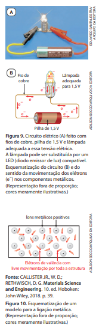

Ligação metálica
No circuito elétrico da Figura 9.A, o acendimento da lâmpada evidencia o estabelecimento de uma corrente elétrica, fluxo ordenado de cargas elétricas, pelos fios metálicos, a pilha e a lâmpada. A corrente elétrica em uma substância metálica como o cobre consiste no movimento ordenado de elétrons através dele (Fig. 9.B). Metais são bons condutores de corrente elétrica porque seus elétrons de valência estão livres para se mover no sólido.
A condução de corrente elétrica pelos metais em fase sólida pode ser explicada por um modelo de ligação química de natureza elétrica baseado na atração entre íons positivos e elétrons, a ligação metálica. Como os metais apresentam baixos valores de eletronegatividade, seus elétrons de valência são pouco atraídos por seus núcleos, e, por isso, os metais apresentam tendência a perder elétrons e formar cátions. Com base nisso, propõe ‑se que a estrutura dos metais seja formada por um conjunto de cátions e elétrons, sendo que os últimos podem se movimentar nessa estrutura (Fig. 10), denominada retículo cristalino metálico.
A repulsão entre os cátions é neutralizada em razão da presença dos elétrons. A boa condutibilidade elétrica desses materiais pode ser explicada considerando que os elétrons de valência são pouco atraídos pelos núcleos e se movem dentro da estrutura metálica.
O movimento dos elétrons é desordenado, mas, quando as extremidades do metal são conectadas a uma fonte de tensão elétrica (uma pilha, por exemplo), eles passam a se movimentar de forma ordenada, de um extremo ao outro da estrutura, constituindo uma corrente elétrica.
Propriedades gerais de substâncias metálicas
As substâncias metálicas são úteis ao ser humano devido às suas propriedades, que, de modo bem genérico, comentaremos a seguir. Quando polidas, refletem muito bem a luz, apresentando um brilho metálico característico, fácil de perceber em bandejas e espelhos de prata. A condutividade térmica e a condutividade elétrica são, em geral, elevadas; a agitação térmica das partículas possibilita a eficiente propagação do calor, e o movimento ordenado dos elétrons constitui a corrente elétrica.
A maioria dos metais apresenta altas temperaturas de fusão (TF) e de ebulição. Há, contudo, exceções a essa tendência, como mercúrio (TF = −39 °C, a 1 atm), gálio (TF = 30 °C, a 1 atm) e potássio (TF = 64 °C, a 1 atm). Metais têm alta ductilidade (são facilmente transformados em fios) e alta maleabilidade (são facilmente transformados em lâminas). Como as ligações metálicas têm a mesma intensidade em todas as direções, muitos metais podem ser deformados sem que se destrua sua estrutura cristalina.
Ligas metálicas
Os metais também podem formar diferentes ligas metálicas (Fig. 11). O ouro 18 quilates é liga de ouro e cobre (e, eventualmente, outros metais, como prata), o bronze é liga de cobre e estanho usada em sinos, estátuas, medalhas e monumentos, o latão é liga de cobre e zinco utilizada em zíperes, torneiras, conexões hidráulicas e instrumentos musicais. O aço, comentado na abertura deste capítulo, é uma liga de ferro com pequena quantidade de carbono.
Ao se desenvolver uma liga metálica, é possível obter um material com propriedades diferenciadas dos materiais individuais usados em sua elaboração. Um objeto pode ser constituído de diferentes ligas metálicas


Dialogando com o texto
Caso seja possível, sugerimos acessar modelo tridimensional do retículo cris‑ talino da prata metálica. Disponível em: https://modelosmoleculares.com.br/3D/prata.html Acesso em: 15 out. 2024.
Também sugerimos acessar outro tipo de representação, na qual apenas a posição central de cada átomo de prata é indicada. Disponível em: https://modelosmoleculares.com.br/3D/prata-centros.html Acesso em: 15 out. 2024.
Exercícios
27. Analise atentamente as seguintes afirmativas e indique se são verdadeiras ou falsas.
- a. Um pedaço de metal sólido é constituído por moléculas.
- b. Quando átomos de metal se unem por ligação metálica, eles passam a ficar com o octeto completo.
- c. Num retículo cristalino metálico os átomos podem estar unidos por ligações iônicas ou covalentes.
- d. Metais são bons condutores de corrente elétrica, pois apresentam elétrons livres.
- e. Metais são bons condutores de calor, pois apresentam elétrons livres.
- f. O aço é uma liga que apresenta alta resistência à tração, daí ser usado em cabos de elevador e em construção civil.
28. (Fatec‑SP) A condutibilidade elétrica dos metais é expli‑ cada admitindo‑se:
- a. ruptura de ligações iônicas.
- b. ruptura de ligações covalentes.
- c. existência de prótons livres.
- d. existência de elétrons livres.
- e. existência de nêutrons livres.
29. (UFU‑MG) Entre as substâncias simples puras constituí‑ das por átomos de S, As, Cd, I e Br, a que deve conduzir melhor a corrente elétrica é a substância:
- a. enxofre.
- b. arsênio.
- c. cádmio.
- d. iodo.
- e. bromo.